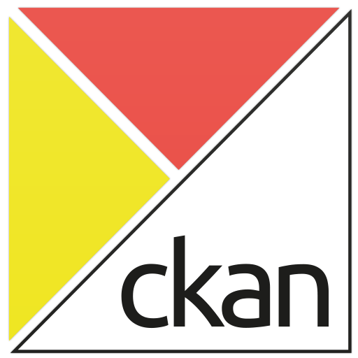

Geonetwork and open data best practices
María Arias de Reyna
Current OpenData Support
Endpoints:
- Metadata service:
http://.../rdf.metadata.get?uuid=$uuid - Search service:
http://.../rdf.search?
Schemas supported:
- ISO19139
- ISO19110
- Dublin Core
Linked Data
Linked Data is about using the Web to connect related data that wasn't previously linked, or using the Web to lower the barriers to linking data currently linked using other methods. More specifically, Wikipedia defines Linked Data as "a term used to describe a recommended best practice for exposing, sharing, and connecting pieces of data, information, and knowledge on the Semantic Web using URIs and RDF."
Linked Data
- Similar to thesauri
- Adds semantic
- Navigates through links to get context
- Do not duplicate definitions through different catalogs
- Persistent link for each object

CKAN
- Very popular catalog alternative
- Less restrictive formats
- Not INSPIRE prepared
- Easy to use for crowd
- Open Knowledge Foundation
- PublicaMundi

Where can we improve?
- Harvest from Open-Data catalogs (CKAN?)
- Native SPARQL queries
- Allow linking to external opendata sources
- Open data Encodings: json-ld
- Open data Protocols: atom, ckan rest
- Open data Mappings: ISO-rdf vs DCAT

That's it
Questions, suggestions, comments, critics,...